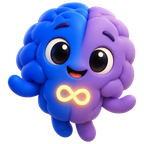

Todos los servicios
Entender tu perfil
Evaluación y Orientación
Comprensión integral de tu perfil y mapas de procesamiento cognitivo adaptados a ti.
Un proceso para comprender cómo procesas, sientes y te relacionas con el mundo, plasmado en un mapa de procesamiento cognitivo pensado específicamente para ti y para tus próximos pasos.

Sparkie dice: Entenderte no es ponerte una etiqueta: es tener un mapa a tu medida.
Resultado
Mapa de procesamiento cognitivo
Enfoque
Neuroafirmativo y orientado a tus necesidades
Primer paso
Escríbenos y te explicamos cómo empezar
¿Para quién es?
- Personas en proceso de evaluación o que se preguntan si son neurodivergentes.
- Quienes ya tienen un diagnóstico y quieren comprender mejor su propio funcionamiento.
- Quienes necesitan una orientación clara sobre qué hacer a continuación.
¿Qué esperar?
- Un proceso respetuoso, sin etiquetas rígidas ni presión por encajar.
- Un lenguaje claro y adaptado a ti.
- Orientación concreta sobre los pasos a seguir.
Este es un espacio de acompañamiento neuroafirmativo y orientación. No sustituye la valoración ni el tratamiento médico o psiquiátrico cuando son necesarios.